Chapter 6 Descriptive Statistics
6.1 Introduction to Statistics
6.1.1 Some Basic Terminologies Used in Statistics
i Population
- The set of all possible elements in the universe of interest to the researcher
ii Sample
- A Sample is a subset (a portion or part) of the population of interest
- The sample must be a representative of the population of interest
iii Element
- Element is an entity or object which the information is collected.
- Eg: Student, household, farm, company, tomato plant
iv Variable
- A variable is a feature characteristic which has different ‘values’ or categories for different elements (items/subjects/individuals)
- Eg: Gender of client, brand of mobile phones, risk level, number of emails received per day, age of client, income of client
v Data
- Data are measurements or facts that are collected from a statistical unit/entity of interest
- We collect data on variables
- Data are raw numbers or facts that must be processed (analysed) to get useful information.
We get information from data.
Eg:
Variable: Age (in years) of client
Data: 21, 45, 18, 32, 30, 22, 23, 27
Information:
The mean age is 27.25 years
The minimum age is 18 years
The range of ages is 18-45
The percentage of clients below 25 years of age: 50%
vi Statistic
- Characteristic of a sample
- The value which calculated based on sample data
vii Parameter
- Characteristic of a population
- The value which calculated based on population data
viii Census
- When a researcher gathers data from the whole population for a given measurement, it is called a census
ix Sampling
- When a researcher gathers data from a sample of the population for a given measurement, it is called sampling
- The process of selecting a sample is also called sampling
Why take a sample instead of studying every member of the population ?
- Prohibitive cost of census
- Destruction of item being studied may be required
- Not possible to test or inspect all members of a population being studied.
6.1.2 Branches of Statistics
i Descriptive Statistics
- Descriptive statistics consists of organizing, summarizing and presenting data in an informative way.
- The main purpose of descriptive statistics is to provide an overview of the data collected.
- Descriptive statistics describes the data collected through frequency tables, graphs and summary measures (mean, variance, quartiles, etc.).
ii Inferential Statistics
- In inferential statistics sample data are used to draw inferences (i.e. derive conclusions) or make predictions about the populations from which the sample has been taken.
- This includes methods used to make decisions, estimates, predictions or generalizations about a population based on a sample.
- This includes point estimations, interval estimation, test of hypotheses, regression analysis, time series analysis, multivariate analysis, etc.
6.1.3 Types of Variables

6.1.3.1 Qualitative / Quantitative Variables
i Qualitative variable (Categorical variable)
- The characteristic is a quality.
- The data are categories.
- They cannot be given numerical values.
- However, it may be given a numerical label
- Qualitative variables are sometimes referred as categorical variables.
- Eg:
Gender:
Age group:
Education level:
A/L stream:
Degree type:
Hair colour:
FIT student batch:
Undergraduate level:
Grade that you can obtain for CM 1110/ CM1130
ii Quantitative variable
- The characteristic is a quantity
- The data are numbers
- Quantitative data require numeric values that indicate how much or how many.
- They are obtained by counting or measuring with some scale
- Eg:
Number of family members:
Number of emails received per day:
Weight of a student:
Age:
Credit balance in the SIM card:
Time remaining in class:
Temperature:
Marks
6.1.3.2 Discrete/ Continuous Variables
- Quantitative variables can be classified as either discrete or continuous.
i Discrete Variables
- Quantitative
- Usually the data are obtained by counting
- There are impossible values between any two possible values
- Eg:
Number of family members:
Number of emails received per day:
ii Continuous Variables
- Quantitative
- Usually, the data are obtained by measuring with a scale
- There are no impossible values between any two possible values.(any value between any two possible values is also a possible value)
- i.e a continuous variable can take any value within a specified range.
- Eg:
Weight of a student:
Age:
Credit balance in the SIM card:
Time remaining in class:
Temperature:
Marks
6.1.4 Scales of Measurements

- There are four levels of measurements called, nominal, ordinal, interval and ratio.
- Each levels has its own rules and restrictions
- Different levels of measurement contains different amount of information with respect to whatever the data are measuring
i Nominal Scale
- Qualitative
- No order or ranking in categories.
- These categories have to be mutually exclusive, i.e. it should not be possible to place an individual or object in more than one category
- A name of a category can be substituted by a number, but it will be mere label and have no numerical meaning
ii Ordinal Scale
- Qualitative
- Categories can be ordered or ranked
- A name of a category can be substituted by a number, but such a sequence does not indicate absolute quantities.
- Difference between any two numbers on the scale does not have a numerical meaningful.
- It cannot be assumed that the differences between adjacent numbers on the scale are equal.
iii Interval Scale
- Quantitative
- Data can be ordered or ranked
- There is no absolute zero point. Zero is only an arbitrary point with which other values can compare
- Difference between two numbers is a meaningful numerical value
- Ration of two numbers is not a meaningful numerical value.
iv Ratio Scale
- Quantitative
- Highest level of measurement
- There exist an absolute zero point (It has a true zero point)
- Ratio between different measurements is meaningful
6.2 Presentation of Data
The sinking of the Titanic is one of the most infamous shipwrecks in history.
On April 15, 1912, during her maiden voyage, the widely considered “unsinkable” RMS Titanic sank after colliding with an iceberg. Unfortunately, there weren’t enough lifeboats for everyone onboard, resulting in the death of 1502 out of 2224 passengers and crew
Here’s a quick summary of our variables:
| Variable Name | Description |
|---|---|
| PassengerID | Passenger ID (just a row number, so obviously not useful for prediction) |
| Survived | Survived (1) or died (0) |
| Pclass | Passenger class (first, second or third) |
| Name | Passenger name |
| Gender | Passenger Gender |
| Age | Passenger age |
| SibSp | Number of siblings/spouses aboard |
| Parch | Number of parents/children aboard |
| Ticket | Ticket number |
| Fare | Fare |
| Cabin | Cabin |
| Embarked | Port of embarkation (S = Southampton, C = Cherbourg, Q = Queenstown) |
6.2.1 Tabular Presentations of Data
Raw Data
- Raw data are collected data that have not been organized numerically
- Eg: Passenger age
## PassengerId Survived Pclass
## 1 1 0 3
## 2 2 1 1
## 3 3 1 3
## 4 4 1 1
## 5 5 0 3
## 6 6 0 3
## Name Sex Age SibSp Parch
## 1 Braund, Mr. Owen Harris male 22 1 0
## 2 Cumings, Mrs. John Bradley (Florence Briggs Thayer) female 38 1 0
## 3 Heikkinen, Miss. Laina female 26 0 0
## 4 Futrelle, Mrs. Jacques Heath (Lily May Peel) female 35 1 0
## 5 Allen, Mr. William Henry male 35 0 0
## 6 Moran, Mr. James male NA 0 0
## Ticket Fare Cabin Embarked
## 1 A/5 21171 7.2500 S
## 2 PC 17599 71.2833 C85 C
## 3 STON/O2. 3101282 7.9250 S
## 4 113803 53.1000 C123 S
## 5 373450 8.0500 S
## 6 330877 8.4583 Q## [1] 22 38 26 35 35 NA 54 2 27 14 4 58 20 39 14 55 2 NA 31 NA 35 34 15 28 8
## [26] 38 NA 19 NA NA 40 NA NA 66 28 42 NA 21 18 14An array
- An array is an arrangement of raw numerical data in ascending or descending order of magnitude.
- Eg: Passenger age
## [1] 2 2 4 8 14 14 14 15 18 19 20 21 22 26 27 28 28 31 34 35 35 35 38 38 39
## [26] 40 42 54 55 58 66Frequency Table (Frequency Distributions)
- A frequency table (frequency distribution) is a listing of the values a variable takes in a data set, along with how often (frequently) each value occurs
- frequency can be recorded as a
- frequency or count: the number of times a value occurs, or
- percentage frequency: the percentage of times a value occurs
- Percentage frequency can be calculated as,
\[Percentage frequency = \frac{a}{b} \times100 \%\]
- The objective of constructing a frequency table are as follows
- to organize the data in a meaningful manner
- to determine the nature or shape of the distribution
- to draw charts and graphs for the presentation of data
- to facilitate computational procedures for measures of average and spread
- to make comparisons between different data sets
- There are two basic types of frequency tables
- Simple frequency tables (Ungrouped frequency distribution)
- Grouped frequency distribution
6.2.1.1 Simple frequency table (Ungrouped frequency distribution)
- Each possible value or category is taken as a class
- More suitable for
- Qualitative variables
- Discrete variables
- Sometimes construct for continuous variables when there is a small number of possible values between the minimum and maximum.
Examples:
CASE I:
Example 1
The native countries of 56 students from a certain education institute are as follows:
## [1] "SL" "BD" "SL" "SL" "SL" "SL" "IN" "SL" "SL" "SL" "BD" "SL" "SL" "SL" "IN"
## [16] "SL" "SL" "BD" "SL" "SL" "SL" "SL" "SL" "SL" "SL" "SL" "SL" "MD" "SL" "SL"
## [31] "SL" "SL" "SL" "SL" "PK" "MD" "PK" "SL" "SL" "SL" "SL" "SL" "PK" "MD" "SL"
## [46] "SL" "SL" "SL" "SL" "SL" "SL" "SL" "SL" "SL" "MD" "MD"BD- Bangladesh, IN-India, MD-Maldives, PK-Pakistan, SL- Sri Lanka
Construct a frequency table
## Native Country Count Percentage (%)
## Bangladesh 3 5.357
## India 2 3.571
## Maldives 5 8.929
## Pakistan 3 5.357
## Sri Lanka 43 76.786
## Total 56 100.000CASE II:
Example 2
The grades of 30 students for Statistics are as follows:
## [1] "B" "C" "B" "D" "B" "C" "C" "A" "B" "C" "C" "B" "E" "B" "B" "D" "D" "F" "B"
## [20] "D" "D" "A" "B" "A" "B" "C" "E" "A" "A"Construct a frequency table
## Grade Count Percentage (%)
## A 5 17.241
## B 10 34.483
## C 6 20.690
## D 5 17.241
## E 2 6.897
## F 1 3.448
## Total 29 100.000CASE III:
Example 3
The number of family members of a sample of undergraduates of Batch 19 are as follows:
## [1] 7 5 3 4 5 4 3 6 4 4 5 2 7 4 5 6 4 4 3 5Construct a frequency table
## Number of family members Count Percentage (%)
## 2 1 5
## 3 3 15
## 4 7 35
## 5 5 25
## 6 2 10
## 7 2 10
## Total 20 100CASE IV:
Example 4
The ages (in years) of a sample of undergraduates of Batch 19 are as follows:
## [1] 21 22 22 23 22 24 24 23 21 22 23 22 22 23 21 21 22 23 22 23Construct a frequency table
## Age (years) Count Percentage (%)
## 21 4 20
## 22 8 40
## 23 6 30
## 24 2 10
## Total 20 1006.2.1.2 Grouped frequency distribution
- A grouped frequency distribution (table) is obtained by constructing classes (or intervals) for the data and then listing the corresponding number of values in each interval.
- Suitable for quantitative variables with large number of possible values in the range of data.
- Note that when items have been grouped in this way, their individual values are lost.
- When studying about frequency distributions it is very important to know the meaning of the following terms
i Class intervals
- In a frequency distribution the total range of the observations are divided into a number of classes. Those are called class intervals
- Eg: Class intervals: 10-14, 15-19, 20-24, …, 40-44
ii Class limits
- Class limits are the smallest and largest piece of data value that can fall into a given class.
- In the class interval 10-14, the end numbers, 10 and 14, are called class limits
- The smaller number (10) is the lower class limit
- The larger number (14) is the upper class limit
iii Class boundaries
- Class boundaries are obtained by adding the upper limit of one class interval to the lower limit of the next-higher class interval and dividing by 2.
- Class boundaries are also called True class limits
- Class boundaries should not coincide with actual observations
| Class interval | Class boundaries |
|---|---|
| 10 - 14 | 9.5 – 14.5 |
| 15 - 19 | 14.5 – 19.5 |
| 20 - 24 | 19.5 – 24.5 |
| 25 - 29 | 24.5 – 29.5 |
| 30 - 34 | 29.5 – 34.5 |
| 35 - 39 | 34.5 – 39.5 |
| 40 - 44 | 39.5 – 44.5 |
iv The size or width of a class interval
- The size or width of a class interval is the difference between the lower and upper class boundaries
- It is also referred to as the class width, class size, or class length
- Eg: The class width for the class 10-14 is = 14.5-9.5 = 5
v The class mark ( Midpoint of the class)
- Midpoint of the class
- Also called as class midpoint
- \(\text{Midpoint of the class} = \frac{\text{Lower limit} + \text{Upper limit}}{2}\)
or
- \(\text{Midpoint of the class} = \frac{\text{Lower boundary} + \text{Upper boundary}}{2}\)
vi Open class intervals
A class interval that, at least theoretically, has either no upper class limit or no lower class limit indicated is called an open class interval
For example, referring to age groups of individuals, the class interval “65 year and over” is an open class interval
Rules and Practices for constructing grouped frequency tables
- Every data value should be in an interval
- The intervals should be mutually exclusive
- The classes of the distribution must be arrayed in size order.
- The number of classes not less than 5 or not greater than 15 is recommended.
- The following formula is often used to determine the number of classes: If n is the number of observations, then
\[\text{Number of classes} = \sqrt{n}\]
\[\text{Width of the class interval} = \frac{Range}{\sqrt{n}}= \frac{Min-Max}{\sqrt{n}}\]
- Data should be represented within classes having limits which the data can attain
- Classes should be continuous
- By convention, the beginning of the interval is given the appropriate exact value, rather than the end.
Eg: intervals of 0-49, 50-99,100-149 would be preferred over the intervals 1-50, 51-100, 101-150 etc. - The number f observations falling into each category or class interval (class frequency) can be easily found using tally marks.
Examples:
In a grouped frequency distribution, class intervals can be constructed in different ways
Example 1
| Class interval | Number of students |
|---|---|
| 10 - 14 | 4 |
| 15 - 19 | 5 |
| 20 - 24 | 11 |
| 25 - 29 | 9 |
| 30 - 34 | 6 |
| 35 - 39 | 3 |
| 40 - 44 | 2 |
Example 2
| Salary | Number of employees |
|---|---|
| 0 – 1999 | 1 |
| 2000 – 3999 | 31 |
| 4000 – 5999 | 18 |
| 6000 – 7999 | 4 |
| 8000 – 9999 | 2 |
| 10000 - 11999 | 1 |
| 12000 – 13999 | 0 |
| 14000 – 15999 | 0 |
| 16000 – 17999 | 1 |
| 18000 -19999 | 1 |
| 20000-21999 | 1 |
| Salary | Number of employees |
|---|---|
| 0 – 1999 | 1 |
| 2000 – 3999 | 31 |
| 4000 – 5999 | 18 |
| 6000 – 7999 | 4 |
| 8000 – 9999 | 2 |
| 10000 - 15999 | 1 |
| 16000 – 21999 | 3 |
| Total | 60 |
Example 3
| Salary | Number of employees |
|---|---|
| Less than 2000 | 1 |
| 2000 – 2999 | 11 |
| 3000 – 3999 | 20 |
| 4000 – 5999 | 18 |
| 6000 – 9999 | 6 |
| Greater than or equal to 10000 | 4 |
| Total | 60 |
6.2.1.3 Two-way frequency table
- Cross tabulation, Cross classification table, Contingency table, Two-way table
- Display the relationship between two or more qualitative variables (categorical variables (nominal or ordinal))
## # A tibble: 2 x 4
## Survived First Second Third
## <chr> <dbl> <dbl> <dbl>
## 1 died 80 97 372
## 2 Survived 136 87 119## # A tibble: 2 x 4
## Survived First Second Third
## <chr> <dbl> <dbl> <dbl>
## 1 died 0.37 0.53 0.76
## 2 Survived 0.63 0.47 0.246.2.2 Graphic Presentations of Data
- A diagram is a visual form for presentation of statistical data.
- The form of the diagram varies according to the nature of the data
6.2.2.1 Describing Qualitative Data
- Bar chart / Pie chart
- Suitable for
- Qualitative variables (nominal or ordinal)
- Discrete variables (when the number of bars or number of different values is small)
I Bar Chart
- A bar graph uses bars to represent discrete categories of data
- It can be drawn either on horizontal (more common) or vertical base
- A rectangle of equal width is drawn for each category
- The height (in vertical bar chart) or the length (in horizontal bar chart) of the rectangle is equal to the category’s frequency or percentage.

i Simple Bar Chart
- Only one categorical variable can be presented
- Often used in conjunction with simple frequency tables
- The bars do not touch each other
- The gaps between adjacent bars are same in length
| Passenger class | Count | Percentage |
|---|---|---|
| First | 216 | 24.242 |
| Second | 184 | 20.651 |
| Third | 491 | 55.107 |
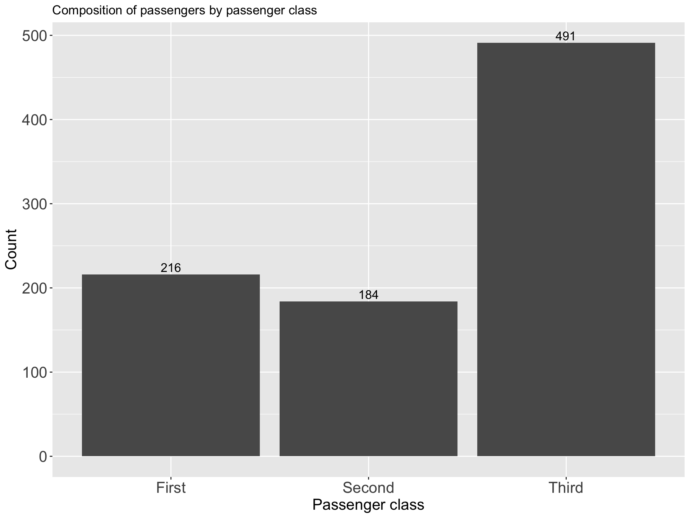
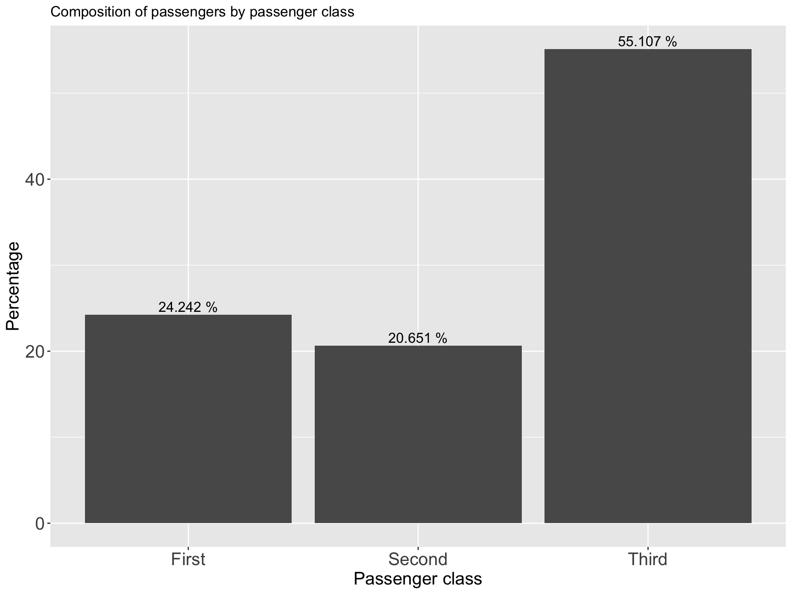
ii Component Bar Chart
- Sub divided bar chart/ Stacked bar chart
- Use to compare two or more qualitative variables (nominal or ordinal)
- Often used in conjunction with two way tables
- Start by drawing a simple bar chart with the total figures.
- The bars are then divided into the component parts
- Can be drawn on absolute figures or percentages
- The various components should be kept in the same order in each bar
- To distinguish different components from one another, different colours or shades can be used
| Survived | First | Second | Third |
|---|---|---|---|
| died | 80 | 97 | 372 |
| Survived | 136 | 87 | 119 |
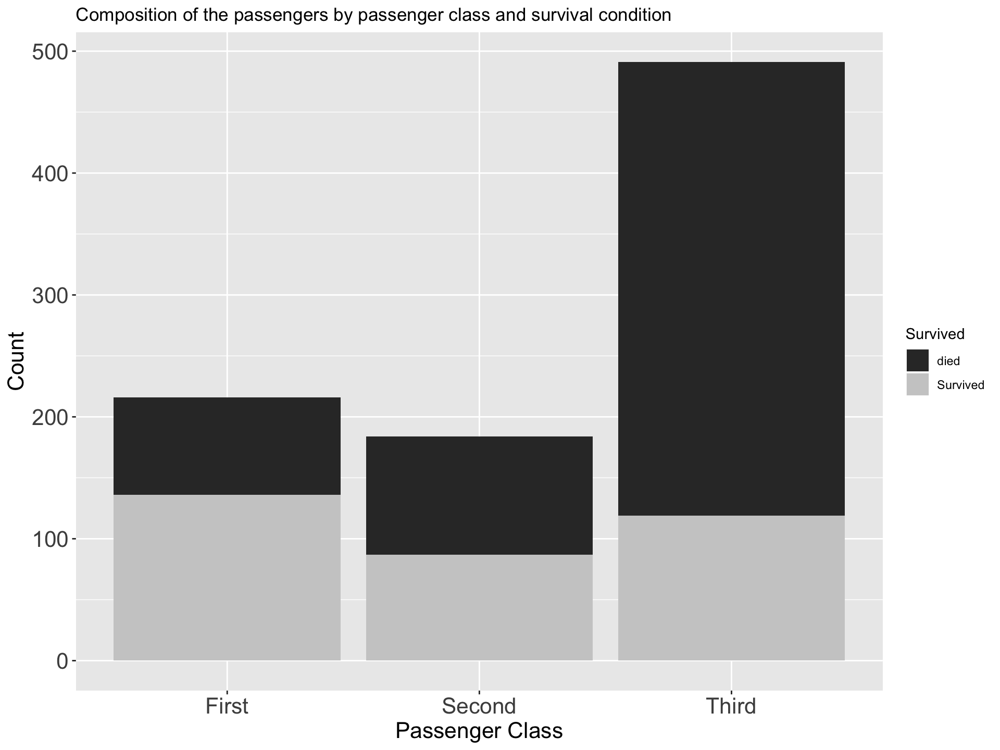
Percentage component bar chart
- When sub-divided bar chart is drawn on percentage basis it is called percentage bar chart
- The various components are expressed as percentage to the total
- All bars are equal in height
| Survived | First | Second | Third |
|---|---|---|---|
| died | 0.3703704 | 0.5271739 | 0.7576375 |
| Survived | 0.6296296 | 0.4728261 | 0.2423625 |
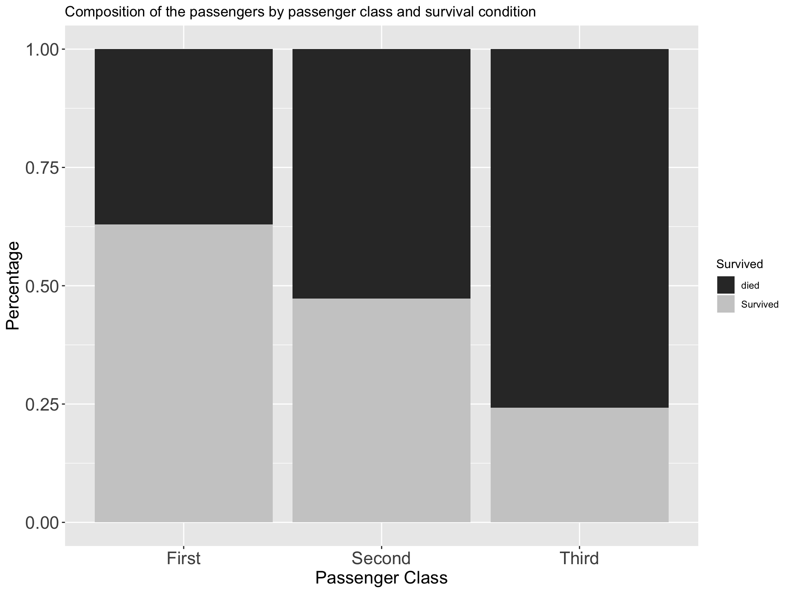
iii Multiple Bar Chart
- Compound bar chart/ Cluster bar chart
- Use to compare two or more qualitative variables (nominal or ordinal)
- Often used in conjunction with two way tables
- These bar charts are drawn side by side
| Survived | First | Second | Third |
|---|---|---|---|
| died | 37.04 | 52.72 | 75.76 |
| Survived | 62.96 | 47.28 | 24.24 |
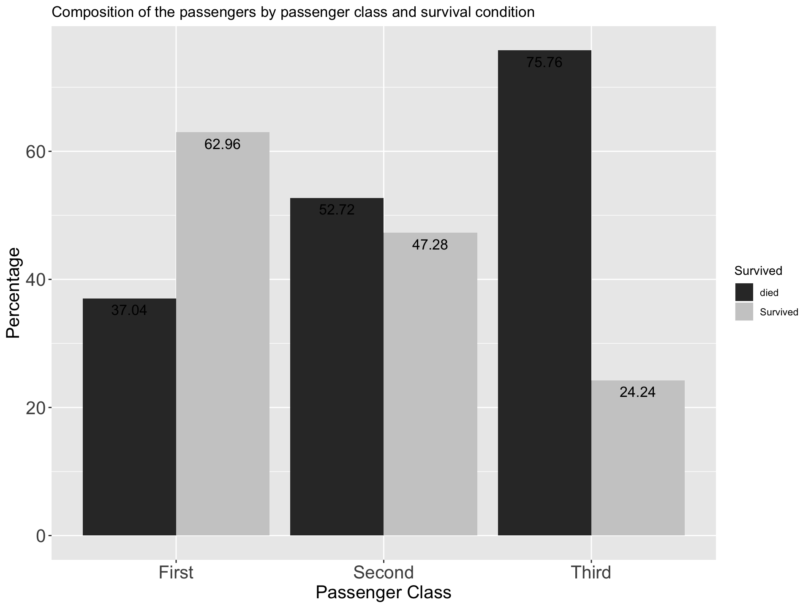
6.2.2.2 Describing Quantitative Data
- Histogram/ Dot plot / Box plot/ Scatter plot
II Histogram
- Histogram looks similar to bar chart since it also has bars.
- However, it is different from a bar chart in a number of aspects.
- One main difference is that in the histogram, the bars are drawn attached to each other; there are no gaps between bars like in a bar chart.
- Histogram is used to show the shape of the distribution of a continuous variable.
- However, the histogram is also used for discrete variables when the data are grouped in to class intervals.
- In a histogram, the area of a bar should be proportional to the frequency of the corresponding class.
- If all the bars have the same width, then the height of a bar can represent the frequency.
- The bar corresponding to a class interval should be drawn from the lower class boundary to the upper class boundary. In this way there will be no gaps between the bars.
Example: The marks(out of 50) of a group of students are recorded in the accompanying table. Draw a histogram for the data
| Marks | Number of students |
|---|---|
| 10 - 14 | 4 |
| 15 - 19 | 5 |
| 20 - 24 | 11 |
| 25 - 29 | 9 |
| 30 - 34 | 6 |
| 35 - 39 | 3 |
| 40 - 44 | 2 |
| Total | 40 |

Example 2
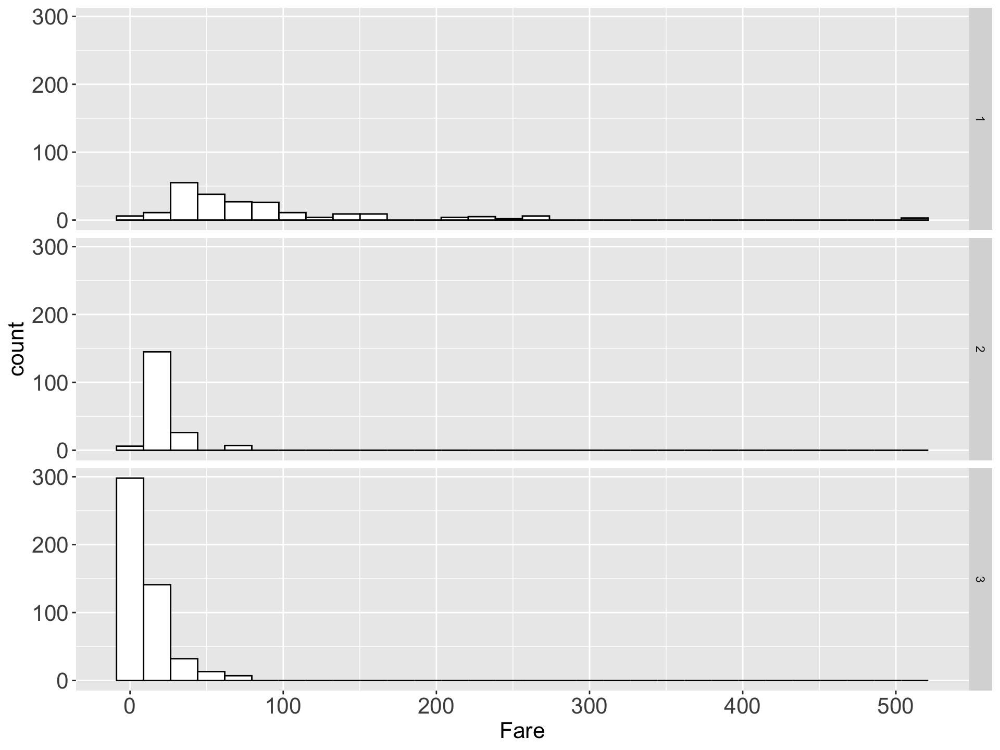
III Frequency polygon
- If the mid-point of the top of each block in a histogram is joined by a straight line, a frequency polygon is produced.
- This is done under the assumption that the frequencies in a class-interval are evenly distributed throughout the class
Example: The marks(out of 50) of a group of students are recorded in the accompanying table. Draw a frequency polygon for the data
| Marks | Number of students |
|---|---|
| 10 - 14 | 4 |
| 15 - 19 | 5 |
| 20 - 24 | 11 |
| 25 - 29 | 9 |
| 30 - 34 | 6 |
| 35 - 39 | 3 |
| 40 - 44 | 2 |
| Total | 40 |

IV Frequency curve
- A frequency curve is drawn by smoothing the frequency polygon.
- It is smooth in such a way that the sharp turns are avoided
Example: The marks(out of 50) of a group of students are recorded in the accompanying table. Draw a frequency curve for the data
| Marks | Number of students |
|---|---|
| 10 - 14 | 4 |
| 15 - 19 | 5 |
| 20 - 24 | 11 |
| 25 - 29 | 9 |
| 30 - 34 | 6 |
| 35 - 39 | 3 |
| 40 - 44 | 2 |
| Total | 40 |
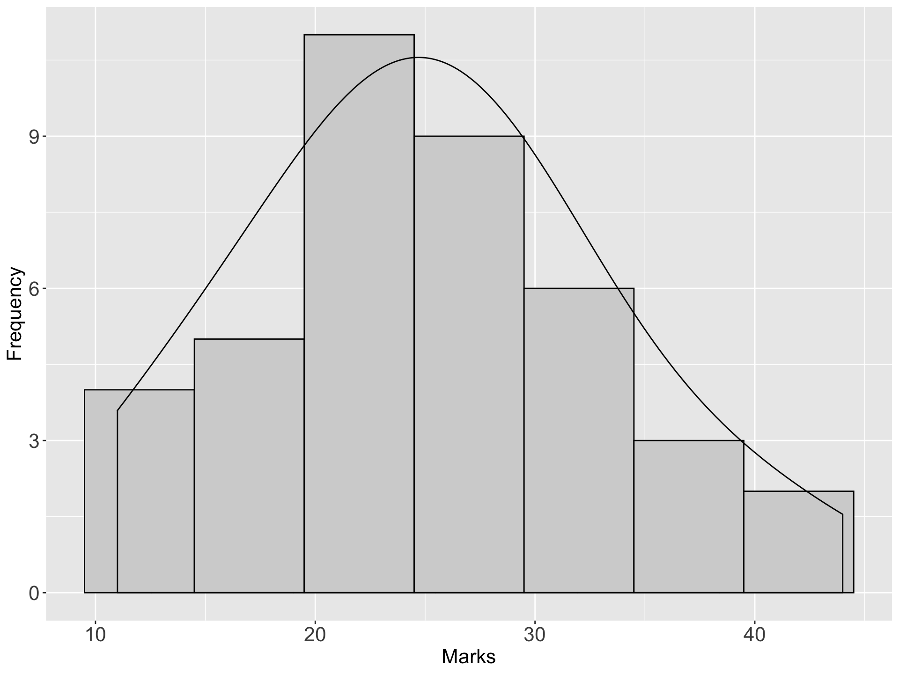
frequency curves arising in practice take on certain characteristics shapes as shown bellow
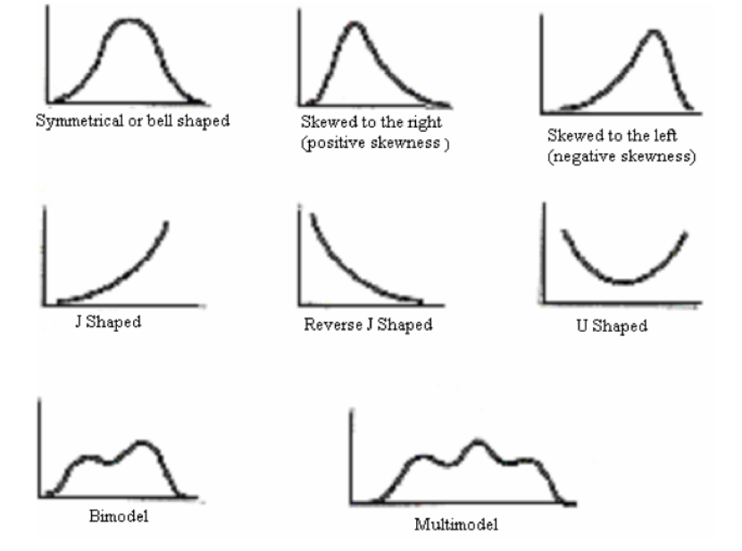
- The symmetrical or bell shaped frequency curves are characterized by the fact that observations equidistant from the central maximum have the same frequency. An important example is the normal curve.
- In the moderately asymmetrical or skewed frequency curves the tail of the curve to one side of the central maximum is longer than that to the other. If the longer tail occurs to the right the curve is said to be skewed to the right or to have positive skewness.While if the reverse is true the curve is said to be skewed to the left or to have negative skewness.
- In a J shaped or reverse J shaped curve a maximum occurs at one end.
- A U shaped frequency curve has maxima at both ends.
- A bimodal frequency curve has two maxima. These appear as two distinct peaks (local maxima) in the frequency curve.When the two modes are unequal the larger mode is known as the major mode and the other as the minor mode.
- A multimodal frequency curve has more than two maxima.
V Dot Plot
- A dot plot is a method of presenting data which gives a rough but rapid visual appreciation of the way in which the data are distributed
- It consists of a horizontal line marked out with divisions of the scale on which the variable is being measured -This graph can be used to represent only the numerical data.
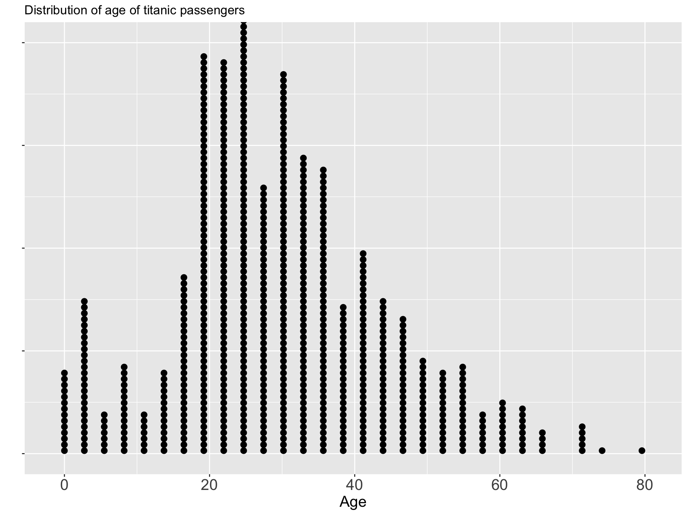
VI Box plot (Box and whisker plot)
- Box plot is also a useful method of representing the behavior of a data set or comparing two or more data sets.
- Box plot is constructed by identifying five statistics from the data set as largest value, smallest values, median, Q1 and Q3.
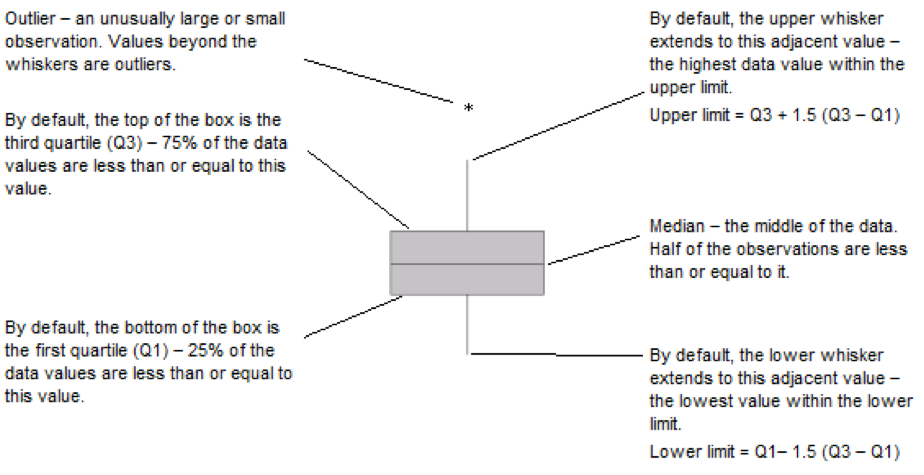
Example:
Construct a box plot for the following data set (Marks of students)
\[\text{52, 88, 56, 79, 72, 91, 85, 88, 68, 63, 76, 73, 86, 95, 12, 69}\]
Xmin = 12 Xmax = 95 Q1 =64.25 Q2 = Median = 74.5 Q3 = 87.5

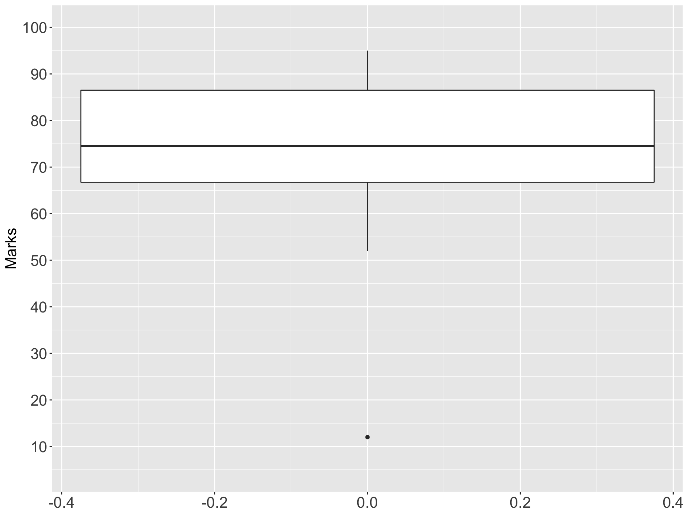
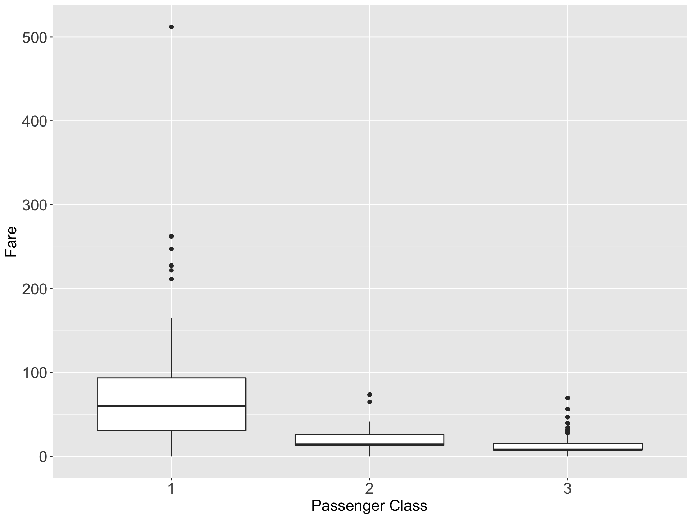

VII Violin plot
- A violin plot is a method of plotting quantitative data.
- It is similar to a box plot, with the addition of a rotated kernel density plot on each side.
- Violin plots are similar to box plots, except that they also show the probability density of the data at different values, usually smoothed by a kernel density estimator.
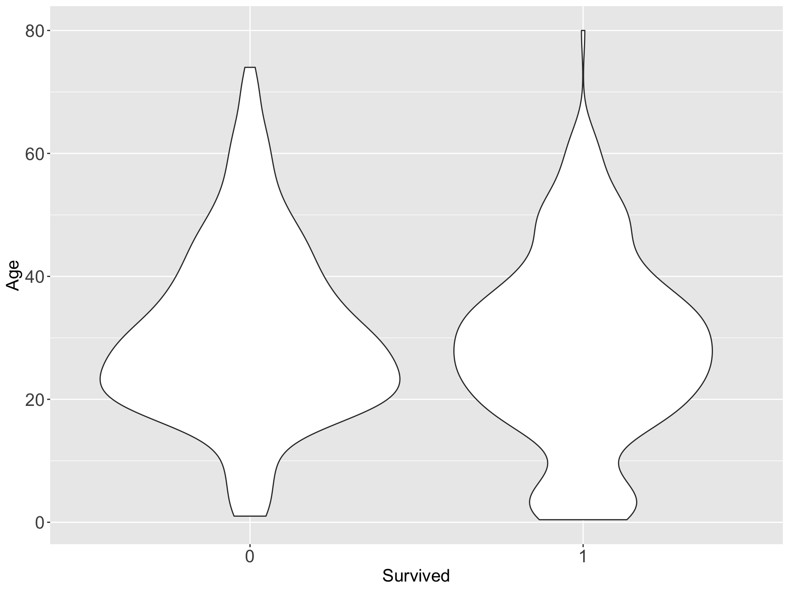
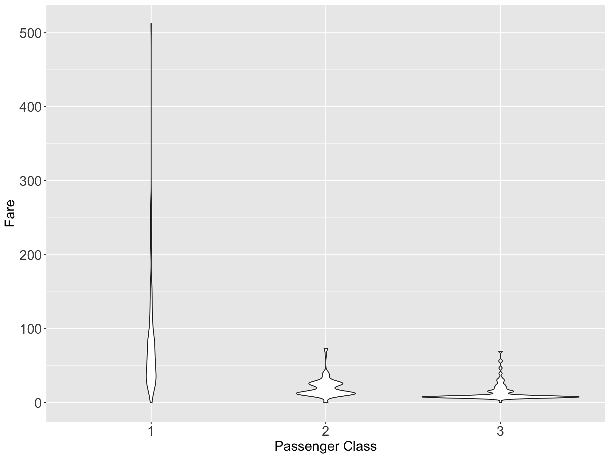
6.3 Summary Measures
Although frequency distribution serves useful purpose, there are many situations that require other types of data summarization.
What we need in many instances is the ability to summarize the data by means of a single number called a descriptive measure.
Descriptive measures may be computed from the data of a sample or the data of a population. To distinguish between them we have the following definitions.
Definitions
A descriptive measure computed from the data of a sample is called a statistic.
A descriptive measure computed from the data of a population is called a parameter.
6.3.1 Measures of Central Tendency
Measure of central tendency yield information about the center, or middle part, of a group of numbers.
Eg: Mode, Median, Arithmetic Mean, Geometric mean, Harmonic Mean, Quadratic Mean, Quartiles, Deciles, and Percentiles
6.3.1.1 Mode
The Mode is the most frequently occuring value in a set of data
Organizing the data into an ordered array (an ordering of the numbers from smallest to largest) helps to locate the mode.
A series having only one mode is called as uni-modal
In the case of a tie for the most frequent occuring value, two modes are listed. Then the data are set to be bimodal
If a set of data is not exactly bimodal but contains two values that are more dominant than others, some researchers take the liberty of referring to the data set as bimodal even without an exact tie for the mode.
Data sets with more than two modes are referred to as multimodal.
The mode is an appropriate measure of central tendency for nominal-level data.
The mode can be used to determine which category occurs most frequently.
For ungrouped data
Example 01: Find mode of the following datasets
Dataset 1: 12, 14, 10, 8, 6, 8, 15, 8

Dataset 2: 40, 44, 57, 48, 78

Dataset 3: 42, 45, 55, 50, 45, 40, 55, 45, 52, 55, 54

For grouped frequency data
Example 02: Find mode of the following data
| Marks | Number of students |
|---|---|
| 20 | 8 |
| 30 | 10 |
| 40 | 16 |
| 50 | 8 |
| 60 | 5 |
| 70 | 3 |
- Advantages and disadvantages of mode
Advantages
- Easy to understand
- Easy to calculate
- Not affected by extreme values in the dataset
- Good for qualitative data
Disadvantages
- Not suitable for further mathematical calculations
- There may be more than one mode for a given dataset
- It is not based upon all the observations
- In some cases, we may not be able to find a mode for a given dataset
6.3.1.2 Median
The median is the middle value in an ordered array of numbers.
Median divides the series into equal parts
The following steps are used to determine the median.
STEP 1: Arrange the observations in an ordered data array.
STEP 2: For an odd number of terms, find the middle term of the ordered array. It is the median.
STEP 3: For an even number of terms, find the arithmetic mean of the middle two terms. This arithmetic mean is the median.
\[Median = \text{the }(\frac{n+1}{2})\text{th item in the data array} \]
- The level of data measurement must be at least ordinal for a median to be meaningful.
Example 1: Find the median of the dataset 1, 8, 6, 3, 2

Example 2: Find the median of the dataset 8, 9, 1, 2, 14, 12

- Advantages and disadvantages of median
Advantages
- Simple to understand
- Easy to calculate
- Not affected by extreme values in the dataset
- Can be calculated even for qualitative variables (ordinal scale data)
Disadvantages
- It is not based upon all the observations
6.3.1.3 Arithmetic Mean
The arithmetic mean (usually called mean) is the sum of all observations divided by the total number of observations.
Population Mean
The poupulation mean us represented by the Greek letter \(mu\) (\(\mu\)).
Let, \(N\) is the number of terms in the population.
\[\mu = \frac{\sum{x}}{N}=\frac{x_1+x_2+x_3+...+x_N}{N}\]
Sample Mean
- The sample mean is represented by \(\bar{x}\)
- Let, \(n\) is the number of terms in the sample \[\bar{x} = \frac{\sum{x}}{n}=\frac{x_1+x_2+x_3+...+x_n}{n}\]
It is inappropriate to use the mean to analyse data that are not at least interval level in measurement.
Example 1: Calculate the mean from the following data
| Student | 1 | 2 | 3 | 4 | 5 | 6 | 7 | 8 | 9 | 10 |
|---|---|---|---|---|---|---|---|---|---|---|
| Marks | 40 | 50 | 53 | 78 | 58 | 60 | 73 | 35 | 43 | 48 |

- Advantages and disadvantages of arithmetic mean
Advantages
- Simple to understand
- Easy to calculate
- Based on all the observations
- Well defined
- Unique
- Can be used in further calculation
Disadvantages
- Can be affected by extreme values in the dataset
- May lead to false conclusions
- Only applicable to quantitative data (not applicable to qualitative data)
Empirical relationship between mean, mode, median
- In case of symmetrical distribution, mean, median and mode coincide \((mean = meadian= mode)\)

- For a moderately asymmetrical distribution, the following relationship exists \(Mean – Mode = 3(Mean - Median)\)

Choice between mean and median
- Mean is very sensitive to outliers.Median is not sensitive to outliers
- When there are outliers in a data set, median is more appropriate than mean
6.3.1.4 Quartiles, Deciles and Percentiles
- Median divides the data set into two equal parts.
- There are other values which divide the data set into a number of equal parts
- Those are Quartiles, Deciles and Percentiles
(a) Quartiles (Q) – Quartiles divide an array into four equal parts
\[Q_i = \text{the }\frac{i}{4}(n+1)\text{th item in the data array} \]
(b) Deciles (D) – Deciles divide an array into ten equal parts
\[D_i = \text{the }\frac{i}{10}(n+1)\text{th item in the data array} \]
(c) Percentiles (P) – Percentiles divide an array into 100 equal parts
\[P_i = \text{the }\frac{i}{100}(n+1)\text{th item in the data array} \]
6.3.2 Measures of Variability
Measure of central tendency yield information about particular points of a data set.
However, business researchers can use another group of analytic tools to describe a set of data.
These tools are measures of variability, which describe the spread or the dispersion of a set of data.
Using measures of variability in conjunction with measures of central tendency makes possible a more complete numerical description of the data.
This section focuses on seven measures of variability for ungrouped data: range, interquartile range, variance, standard deviation, z score and coefficient of variation.
6.3.2.1 Range
- The range is the difference between the largest value of a data set and the smallest value.
\[Range = Maximum - Minimum\]
One important use of the range is in quality assurance, where the range is used to construct control charts
Advantages and disadvantages of range
Advantages
- Easy to understand and calculate
Disadvantages
- Consider only the highest and lowest values of the data and fails to take account of any other observations in the dataset
- Heavily influenced by extreme values
6.3.2.2 Interquartile Range (IQR)
We use the interquartile range (IQR) to measure the spread of a data around the median (M).
The interquartile range is the range of values between the first and third quartile.
Essentially it is the range of the middle 50% of the data and is determined by computing the value of \(Q_3 - Q_1\).
The interquartile range is especially useful in situations where data users are more interested in values towards the middle and less interested in extremes.
The interquartile range is used in the construction of box and whisker plots.
By eliminating the lowest 25% and the highest 25% of the items in a series, we are left with the central 50% , which are ordinarily free of extreme values.
Advantages
- Easy to understand and calculate
- Not influenced by extreme values
Disadvantages
- Ignore the first \(25\%\) and the last \(25\%\) in the dataset
6.3.2.3 Variance and Standard Deviation
- To measure the spread of data around the mean, we use the standard deviation (S).
- The variance and standard deviation are two very popular measures of dispersion.
- These measures are not meaningful unless the data are at least interval-level data.
- Their formulations are categorized into whether to evaluate from a population or from a sample.
NOTE
Sum of deviations from the arithmetic mean is always zero. \[{\sum{(x-\mu)} = 0}\]
This property requires considering the alternative ways to obtain measure of variability.
6.3.2.3.1 Variance
The variance is the average of the squared deviations about the mean for a set of numbers.
The population variance is denoted by \(\sigma^2\)
\[\sigma^2 = \frac{\sum(x-\mu)^2}{N}\]
The sum of the squared deviations about the mean of a set of values - called the sum of squares of \(x\) and sometimes abbreviated as \(SS_x\)
Because the variance is computed from squared deviations, the final result is expressed in terms of squared units of measurements.
Statistics measured in squared units are problematic to interpret.
6.3.2.3.2 Standard Deviation
The standard deviation is the square root of the variance.
The population standard deviation is denoted by \(\sigma\)
\[\sigma = \sqrt{\frac{\sum(x-\mu)^2}{N}}=\sqrt{\sigma^2}\]
- One feature of standard deviation that distinguishes it from a variance is that the standard deviation is expressed in the same units as the raw data, whereas the variance is expressed in those units squared.
Advantages
- Based on all the observations
- Since this is based on arithmetic mean, it has all the merits of it
- The most important and widely used measure of dispersion
Disadvantages
- Not easy to understand and difficult to calculate
- Gives more weight to extreme values, because the values are squared up
6.3.2.4 Empirical Rule
The empirical rule is an important rule of thumb that is used to state the approximate percentage of values that lie within a given number of standard deviations from the mean of a set of data if the data are normally distributed
The empirical rule is used only for three numbers of standard deviations: \(1\sigma\), \(2\sigma\), \(3\sigma\)
| Distance from the mean | Values within distance |
|---|---|
| \(\mu\pm1\sigma\) | \(68\%\) |
| \(\mu\pm2\sigma\) | \(95\%\) |
| \(\mu\pm3\sigma\) | \(99.7\%\) |

- If a set of data is normally distributed, or bell shaped, approximately \(68\%\) of the data values are within one standard deviation of the mean, \(95\%\) are within two standard deviations, and almost \(100\%\) are within three standard deviations.
6.3.2.5 Population versus sample variance and standard deviations
The sample variance is denoted by \(s^2\) and the sample standard deviation by \(s\).
The main use for sample variances and standard deviations is as estimators of population variances and standard deviations.
Thus, computation of the sample variance and standard deviation differs slightly from computation of the population variance and standard deviation.
Both the sample variance and sample standard deviation use \(n-1\)int he denominator instead of \(n\) because using \(n\) in the denominator of a sample variance results in a statistic that tends to underestimate the population variance.
While discussion of the properties of good estimator is beyond the scope of this course, one of the properties of a good estimator is being unbiased.
Whereas, using \(n\) in the denominator of the sample variance makes it a biased estimator, using \(n-1\) allows it to be an unbiased estimator, which is a desirable property in inferential statistics.
Sample variance
\[s^2 = \frac{\sum{(x-\bar{x})^2}}{n-1}\]
Sample standard deviation
\[s = \sqrt{\frac{\sum{(x-\bar{x})^2}}{n-1}}= \sqrt{s^2}\]
6.3.2.6 Computational formulas for variance and standard deviation
An alternative method of computing variance and standard deviation, sometimes referred to as the computational method or shortcut method, is available.
Algebraically,
\[\sum{(x-\mu)^2}= \sum{x^2}- \frac{(\sum x)^2}{N}\]

and
\[\sum{(x-\bar{x})^2}= \sum{x^2}- \frac{(\sum x)^2}{n}\]
- Substituting these equivalent expressions into the original formulas for variance and standard deviation yields the following computational formulas.
Computational formula for population variance and standard deviation
\[\sigma^2 = \frac{\sum{x^2}- \frac{(\sum x)^2}{N}}{N}\]
\[\sigma = \sqrt{\sigma^2}\]
Computational formula for sample variance and standard deviation
\[s^2 = \frac{\sum{x^2}- \frac{(\sum x)^2}{n}}{n-1}\]
\[s = \sqrt{s^2}\]
- For situations in which the mean is already computed or is given, alternative forms of these formulas are:
\[\sigma^2 = \frac{\sum{x^2}-N\mu^2}{N}\]
\[s^2 = \frac{\sum{x^2}-n(\bar{x})^2}{n-1}\]
6.3.2.7 Coefficient of variation
In general, for two variables measured with he same units (eg: two groups of people both weighed in kg), the group with the larger variance and standard deviation has n=more variability among their scores.
The unit of measure affects the size od the variance.
The same population weights, expressed in ‘grams’ rather than kg would have a larger variance and standard deviation.
The coefficient of variation, a measure of relative variability gets around this difficulty and makes it possible to compare variability across variables measured in different units.
The coefficient of variation is the ratio of the standard deviation to the mean, expressed as a percentage and is denoted CV.
\[CV = \frac{\sigma}{\mu}(100)\]
Using median and quartile deviation
\[CV = \frac{\frac{Q_3 - Q_1}{2}}{Median}(100)\]
The coefficient of variation essentially is a relative comparison of a standard deviation to its mean.
The coefficient of variation can be useful in comparing standard deviations that have been computed from data with different means.
The choice of whether to use a coefficient of variation or raw standard deviations to compare multiple standard deviations is a matter of preference
The coefficient of variation also provides and optional method of interpreting the value of a standard deviation.
6.3.3 Measures of Shape
Measures of shape are tools that can be used to describe the shape of a distribution of data.
In this section, we examine two measures of shapes: skewness and Kurtosis.
6.3.3.1 Skewness
A distribution of data in which the right half is a mirror image of the left half is said to be symmetrical.
One example of a symmetrical distribution is the normal distribution, or bell curve.
Skewness is a measure of symmetry, or more precisely, the lack of symmetry
The measures of asymmetry are called as measures of skewness.
The skewed portion is the long, thin part of the curve
Skewness and the relationship of the mean, median and mode
The concept of skewness helps us to understand the relationship between the mean, median and mode.
In a unimodal distribution (distribution with a single peak or mode) that is skewed, the mode is the apex (high point) of the curve and the median is the middle value.
The mean tends to be located toward the tail of the distribution, because the mean is affected by all values, including the extreme ones.
A bell-shaped or normal distribution with the mean, median and mode all at the centre of the distribution has no skewness.
Figure 6.1: Relationship of mean, median and mode for different types of skewness
6.3.3.1.1 Pearsonian coefficient of skewness
- This coefficient compares the mean and median in light of the magnitude of the standard deviation
\[S_k = \frac{3(\mu-M_d)}{\sigma}\]
where \(S_k\) = coefficient of skewness, \(M_d\) = median
Note that if the distribution is symmetrical, the mean and median are the same value and hence the coefficient of skewness is equal to zero.
If the value of \(S_k\) is positive, the distribution is positively skewed.
If the value of \(S_k\) is negative, the distribution is negatively skewed.
The greater the magnitude of \(S_k\), the more skewed is the distribution.
6.3.3.2 Kurtosis
Kurtosis describes the amount of peakedness of a distribution.
Kurtosis is a measure of whether the data are peaked or flat relative to a normal distribution
Distributions that are high and thin are referred to as leptokurtic distributions.
Distributions that are flat and spread out are referred to as platykurtic distributions.
Between the above two types are distributions that are more ‘normal’ in shape, referred to as mesokurtic distributions
Figure 6.2: Types of kurtosis
6.3.4 Measures of Association
- Many times in business it is important to explore the relationship between two numerical variables
- Measures of association are statistics that yeild information about the relatedness of numerical variables.
- In this section, we discuss only one measure of association, correlation, and d so only for two numerical variables.
6.3.4.1 Scatter plot
- A scatter plot is a two dimensional graph of pairs of points from two numerical variables
- In a quantitative bi-variate dataset, we have a \((x,y)\) pair for each sampling unit, where \(x\) denotes the independent variable and \(y\) denotes the dependent variable.
- Each \((x,y)\) pair can be considered as a point on the Cartesian plan.
- Scatter plot is a plot of all the \((x,y)\) pairs in the dataset.
- The purpose of scatter plot is to illustrate any relationship between two quantitative variables.
- If the variables are related, what kind of relationship it is, linear or nonlinear?
- If the relationship is linear, the scatter plot will show whether it is negative or positive.
Example: Edgar Anderson’s Iris Data
This famous (Fisher’s or Anderson’s) iris data set gives the measurements in centimeters of the variables sepal length and width and petal length and width, respectively, for 50 flowers from each of 3 species of iris. The species are Iris setosa, versicolor, and virginica.
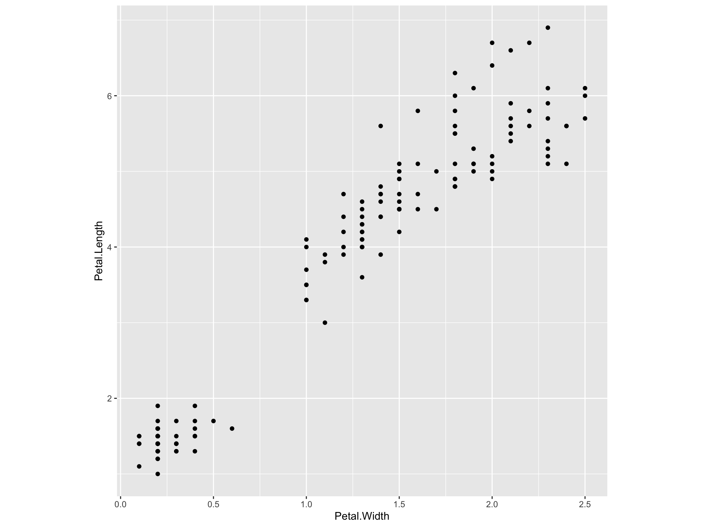
6.3.4.2 Correlation
- Correlation is a measure of the degree of relatedness of two or more variables.
- Several measures of correlation are available , the selection of which depends mostly on the level of data being analysed.
- Ideally, researchers would like to calculate \(\rho\), the population coefficient of correlation.
- However, because researchers virtually always deal with sample data, this section introduces a widely used sample coefficient of correlation, \(r\).
- This measure is applicable only if both variables being analysed have at least an interval level of data
Pearson product-moment correlation coefficient (\(r\))
- The statistic \(r\) is the Pearson product-moment correlation coefficient, named after Karl Pearson (1857 - 1936).
- The tern \(r\) is a measure of the linear correlation of two variables.
- It is a number that ranges from -1 to 0 to +1, representing th strength of the linear relationship between the variables.
- An \(r\) value of \(+1\) denotes a perfect linear positive relationship between two variables.
- An \(r\) value of \(-1\) denotes a perfect linear negative relationship between two variables, which indicates an inverse relationship between two variables: as one variable gets larger, the other gets smaller.
- An \(r\) value of 0 means no linear relationship is present between the two variables.
\[ r = \frac{\sum(x-\bar{x})(y-\bar{y})}{\sqrt{\sum(x-\bar{x})^2\sum(y-\bar{y})^2}}\]
\[ r = \frac{\sum{xy} - \frac{(\sum x\sum y)}{n}}{\sqrt{[\sum{x^2- \frac{(\sum{x})^2}{n}}][\sum y^2-\frac{(\sum y)^2}{n}]}}\]
- Examples: Following figure shows five different degrees of correlation:
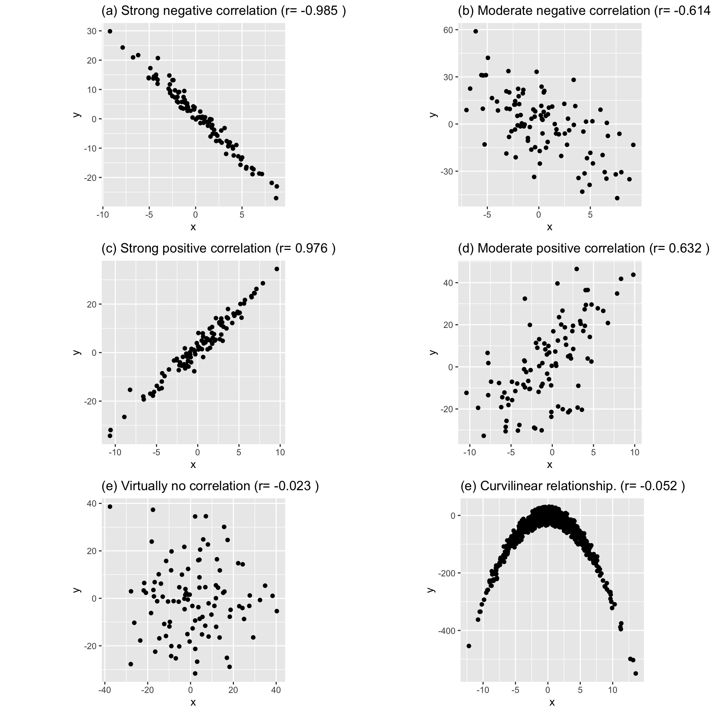
NOTE
- When \(r=0\), it signifies there is no linear relationship between the two variables. (There can be a non-linear relationship, Figure (e))
- Figure (e): There is a very strong curvilinear relationship. But there is no linear relationship.
References
Black, K., Asafu-Adjaye, J., Khan, N., Perera, N., Edwards, P., & Harris, M. (2007). Australasian business statistics. John Wiley & Sons.
6.4 Tutorial
Chapter 6: Descriptive Statistics
- A power company in Sri Lanka designs and manufactures power distribution switchboards for hospitals, bridges, airports, highways and water treatment plants. Power company marketing director wants to determine client satisfaction with their products and services. He developed a questionnaire that yields a satisfaction score between 0 and 100 for participant responses. A random sample of 50 of the company’s 1000 clients is asked to complete a satisfaction survey. The satisfaction scores for the 50 participants are averaged to produce a mean satisfaction score.
- What is the objective of this study?
- What is the population for this study?
- What is the sample for this study?
- What is the statistic for this study?
- What would be a parameter for this study?
- Determine the type and the scale of measurement of the following variables
- The time required to produce an item on an assembly line
- the number of litres of milk a family drinks in a week
- The ranking of 50 students in your class after their overall performance have been designated as excellent, good, satisfactory or poor
- The telephone area code of clients in Australia
- The age of each of your batch mates
- The sales at the local pizza restaurant each month
- A student index number
- The response time of emergency services
- The number of tickets sold at a ticket counter on any given day
- Monthly maximum air temperature
The grades of 30 students for Statistics are as follows:
B, C, B, D, B, C, C, A , B, C,
C, B, E, B, B, D, D, F, B, D,
D, A, B, A, B, C, E, A, A, E
- Construct a frequency table with suitable values (eg: absolute frequency, relative frequency, cumulative frequency, cumulative relative frequency)
The gender type of a group of 10 students are as follows:
Male, Female, Female, Male, Female Female, Male, Male, Female, Female
- Construct a frequency table with suitable values (eg: absolute frequency, relative frequency, cumulative frequency, cumulative relative frequency )
- In a study conducted to investigate the relationship between delivery time and computer-assisted ordering, the following data were gathered from a sample of 40 firms, that 16 use computer-assisted ordering, while 24 do not. Furthermore, past data are used to categorize each firm’s delivery times below the industry average, equal to the industry average, or above the industry average. The results obtained are given in the table below.
| Computer Assisted Ordering | Delivery Time Below Industry Average | Delivery Time Equal to Industry Average | Delivery Time Above industry Average | Row Total |
|---|---|---|---|---|
| No | 4 | 12 | 8 | 24 |
| Yes | 10 | 4 | 2 | 16 |
| Total | 14 | 16 | 10 | 40 |
- For each row and column total, calculate the corresponding row or column percentage.
- For each cell, calculate the corresponding cell, row, and column percentages.
- Carry out graphical analysis to investigate the relationship between delivery-time performance and computer-assisted ordering.
- What conclusions can be made about the nature of the relationship?
- Giving suitable examples distinguish between multiple bar chart and a component bar chart.
- Write down advantages and disadvantages of each chart and when they should be used
- In a study conducted to investigate the effect of wearing helmets in riding motorcycles to reduce the head injuries, the following data were gathered by investigating 151 motorcycle accidents reported during last 10 month period. Out of the total number of cases (151) investigated, only 102 people were wearing helmets properly at the time of the accidents. Out of them, only 9 got severe head injuries. The rest got either minor head injuries or no head injuries at all. Among 49 who were not wearing helmets at the time of the accident, 15 got server head injuries and the rest got minor head injuries or no head injuries at all.
Use an appropriate table to represent the above data and state what conclusions can be drawn from it
Carry out a suitable graphical analysis to investigate the effect of wearing helmets in riding motorcycles to reduce the head injuries.
- The table below shows a frequency distribution of the weekly wages of 65 employees at the ABC Company. With reference to this table,
| Wages (in $) | Number of Employees |
|---|---|
| 250.00 - 259.99 | 8 |
| 260.00 - 269.99 | 10 |
| 270.00 - 279.99 | 16 |
| 280.00 - 289.99 | 14 |
| 290.00 - 299.99 | 10 |
| 300.00 - 309.99 | 5 |
| 310.00 - 319.99 | 2 |
| Total | 65 |
- Construct a histogram
- Construct a frequency polygon
- Construct a frequency curve
- State what conclusions can be drawn from the above graphical analysis
- The contribution of the agriculture, industrial, and service sector to the Gross Domestic Product (GDP) for each province in Sri Lanka is given in the table below. It is required to investigate whether the contributions are varying from province to province. What kind of graph you would suggest for representing data to serve the purpose. Justify your answer. Sketch the proposed graph.
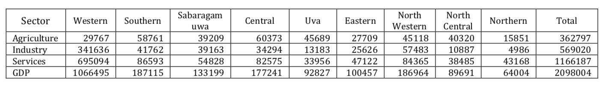
- Marks of 16 students are given below.
\[\text{52, 88, 56, 79, 72, 91, 85, 88, 68, 63, 76, 73, 86, 95, 12, 69}\]
- Find the quartile of the distribution and interpret the values
- Construct a box plot for the data set
- Are there outliers in the data set?
- Listed below, ordered from smallest to largest, is the time in days the customers take to pay their invoices.
\[13, 13, 13, 20, 26, 27, 31, 34, 34, 34, 35, 35, 36, 37, 38, 41, 41, 41, 45, 47, 47, 47, 50, 51, 53, 54, 56, 62, 67, 82\]
- Determine the median
- Determine the first and third quartiles
- Determine the 2nd decile and the 8th decile
- Determine the 67th percentile
- What are outliers?
- Which of the following is/are unaffected by outliers? Underline the correct answer/ answers.
- Mean
- Median
- Mode
- Range
- Standard deviation
- Inter-quartile range
- Some summary measures of a variable is given below. Descriptive Statistics:
| N | Mean | StDev | Minimum | Q1 | Median | Q3 | Maximum |
|---|---|---|---|---|---|---|---|
| 50 | 5.389 | 0.997 | 3.150 | 4.658 | 5.350 | 6.020 | 8.600 |
- Are there outliers in this data set? YES/NO Justify your answer using a box plot
The mean and the standard deviation of 250 observations of a variable X are 62.1 and 4.3 respectively. However, in a re-scrutinizing process, it was found that the observations 72 and 81 were incorrectly recorded as 92 and 87. Find the correct mean and standard deviation of the data set.
The weekly sales from a sample of AB company were organized into a frequency distribution. The mean of weekly sales was computed to be $105,900, the median $105,000, and the mode $104,500
- Sketch the sales in the form of a smoothed frequency polygon. Note the location of the mean, median and mode on the X-axis
- Is the distribution symmetrical, positively skewed, or negatively skewed? Explain.
- Compare the variation of the annual incomes of executives with the variation of the incomes of unskilled employees. The sample information is given below.
| Type | \(\bar{x}\) | \(SD\) |
|---|---|---|
| Executives | 500,000 | 50,000 |
| Unskilled employees | 22,000 | 2,200 |
- Marks for the course module AB and the corresponding lecture attendance of 10 students are given below
| Student Number | 1 | 2 | 3 | 4 | 5 | 6 | 7 | 8 | 9 | 10 |
|---|---|---|---|---|---|---|---|---|---|---|
| Marks in course module AB | 84 | 51 | 91 | 60 | 68 | 89 | 98 | 58 | 53 | 47 |
| Lecture attendance | 13 | 6 | 15 | 4 | 12 | 14 | 15 | 10 | 11 | 6 |
- Draw a scatter plot for the above data
- Calculate the coefficient of correlation
- Comment on the relationship between the marks and the lecture attendance